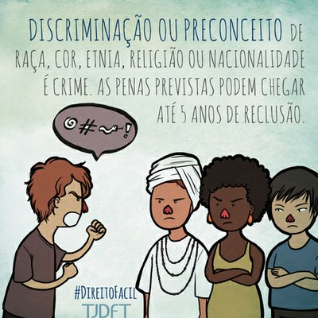
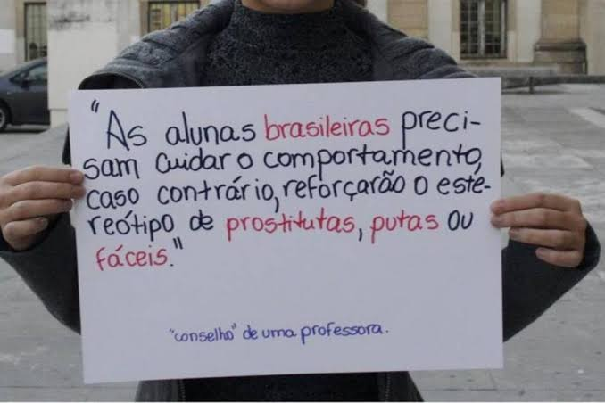
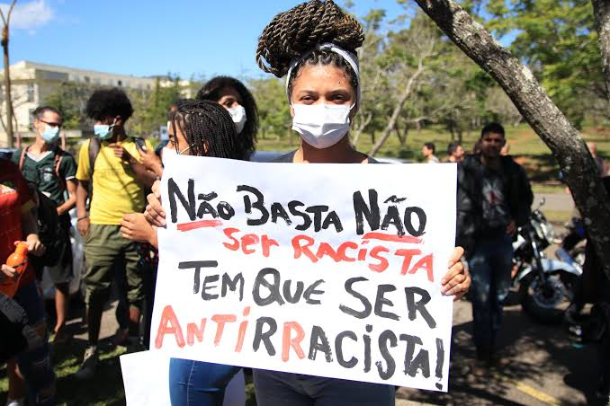

Racismo e Preconceito
Resultado:
• Preconceito: pode resultar em racismo ou discriminação de um determinado grupo;
• Racismo: normalmente, o resultado é a discriminação ou preconceito com base na etnia, causando efeitos adversos como escravidão, guerras e xenofobia
Manifestação:
• Preconceito: como crença;
• Racismo: como crença.
Natureza:
• Preconceito: Não consciente;
• Racismo: consciente e não consciente.
Exemplo:
• Preconceito: pessoas de outros países acharem q no Brasil todo mundo samba, vai ao carnaval e joga futebol;
• Racismo: uma pessoa ser considerada mais violenta apenas pela cor da pele
O preconceito é uma opinião feita de forma superficial em relação a determinada pessoa ou grupo, que não é baseada em uma experiência real ou na razão, sendo baseado tambem na ignorância ou em estereótipos
A única solução de resolver um preconceito é ter respeito, empatia e solidariedade, alguns dos valores essenciais para ajudar a evitar o preconceito, fazem parte das chamadas competências socioemocionais.
O preconceito existe desde a idade medieval, onde viviam os bárbaros, como estes não eram de origem grega ou romana, eram escravizados e por isso não eram considerados humanos. Na idade média, foram criados paradigmas religiosos entre cristãos e pagãos, os que não professavam o cristianismo eram tidos como infiéis e perseguidos pela igreja católica na época. Daí em diante, começamos a ver outras categorias de preconceito, como: étnico, religioso, sexual, entre outros.
| 
|
|
 |
É um resultado do preconceito, causado pela antipatia e pelo ódio a pessoas com diferentes cor de pele costumes, tradições, idioma, local de nascimento, etc.
Algo muito importante de se salientar é que qualquer tipo de etnia pode sofrer racismo em diferentes partes do planeta,
por exemplo o povo brasileiro é um dos que mais sofre racismo e preconceito de outros países, os mais recorrentes são:
Estados Unidos, Argentina, Espanha, França, Portugal, outros países da Europa e alguns países da Ásia.
O racismo também, não necessariamente ocorre devido ao preconceito, pode acontecer também devido à eventos históricos
como uma guerra passada entre dois países, em que depois da guerra o povo de um país começa a temer ou odiar qualquer pessoa do outro.
Também pode acontecer quando um país mais forte invade um outro país mais fraco (que não tem condições de se defender),
explora e escraviza o povo do país invadido e mesmo depois de vários séculos se passarem e a escravidão acabar, o povo do país que foi
escravizado ainda teme e odeia a população do outro.
Um exemplo sobre isso foi um caso que aconteceu entre 2021-2022, na internet, mais especificamente no Twitter, depois de um lançamento
de um filme da Disney, chamado Encanto, que lançou em 25 de novembro de 2021. O filme se passa na Colômbia.
O problema que aconteceu foi que o público estadunidense começou a reclamar que no filme havia uma personagem branca e ruiva,
em que eles alegaram que na América Latina não existiam pessoas brancas, ou que se tem brancos na América Latina, eles não seriam
latinos de verdade. Pessoas que não conhecem a cultura Latina, nunca viajaram para cá e nem sequer sabem falar português ou espanhol
querem ditar o que deve ou não existir ou que tipo de pessoas devem existir na cultura Latina.
As únicas maneiras de se resolver um racismo é :
• Reconhecer que o racismo é um problema estrutural e, diante disso, adotar uma postura institucional antirracista
• Garantir representatividade de raças e etnias nos espaços coletivos de decisão
• Promover atividades formativas com foco na redução de preconceitos e estereótipos de raça
• Sempre lembrar que o racismo não é piada e sim crime
O racismo tem uma origem cientificista, isto é, ele se originou a partir de determinadas teses de cientistas europeus do século XIX, sobretudo médicos e antropólogos, que usaram de seus conhecimentos para elaborar doutrinas raciais. Um dos procedimentos utilizados por esses médicos consistia em medir o tamanho do crânio de indivíduos de “raças” diferentes. Os crânios maiores, que supostamente comportavam mais massa cerebral, eram indicativo de superioridade racial. Outro procedimento consistia em analisar os traços fisionômicos (relativos à feição humana, aos traços faciais), como nariz, lábios, orelhas, cor dos olhos, para que fosse determinado o grau de “pureza racial” atingido por determinada raça ao longo da evolução do homem.
|  |
1989 - Foi aprovada a lei n. 7.716/1989, conhecida popularmente como Lei Caó. A norma define os crimes resultantes de discriminação ou de preconceito de raça, cor, etnia, religião ou procedência nacional.
1990 - Foi aprovado o Estatuto da Criança e do Adolescente (lei n. 8.069/1990), que dispõe sobre a proteção integral da criança e do adolescente, proibindo qualquer forma de discriminação contra eles e assegurando a participação na vida familiar e comunitária sem discriminação (art. 16, V).
1992 - Foram promulgados diversos decretos que fizeram valer tratados internacionais importantes ratificados pelo Brasil que afirmam o compromisso com os princípios da igualdade e da não discriminação: o Pacto Internacionais sobre Direitos Civis e Políticos de 1966 (decreto n. 592/1992), o Pacto Internacional de Direitos Econômicos, Sociais e Culturais de 1996 (decreto n. 591/1992) e a Convenção Americana de Direitos Humanos de 1969 (decreto n. 678/ 1992).
1995 - Foi aprovada a lei n. 9.029/1995, que dispõe sobre a discriminação nas relações de trabalho e proíbe a adoção de práticas discriminatórias que limitem o acesso e a manutenção do trabalho. Com essa lei ficou proibida, por exemplo, a exigência de atestado de gravidez pelo empregador.
1996 - Foi publicado o decreto n. 1.973/1996, que promulgou a Convenção Interamericana para Prevenir, Punir e Erradicar a Violência contra a Mulher de 1994, conhecida como Convenção de Belém do Pará.
2001 - O presidente assinou o decreto n. 3.956/2001, que promulgou a Convenção Interamericana para a Eliminação de todas as formas de Discriminação contra as Pessoas Portadoras de Deficiência de 1999.
2002 - Foi promulgado o decreto n. 4.377/2002, que ratificou a Convenção sobre a Eliminação de Todas as Formas de Discriminação contra a Mulher, aprovada em 1979 pela ONU (Organização das Nações Unidas).
2003 - Foi aprovado o Estatuto do Idoso (lei n. 10.741/2003), que assegura direitos às pessoas com idade igual ou superior a 60 anos. Além da não discriminação, a lei garante a prioridade absoluta dos direitos dos idosos, o que inclui o atendimento preferencial, a destinação privilegiada na destinação de recursos públicos, a prioridade no recebimento da restituição do imposto de renda, entre outros.
2023 - A Lei 14.532/2023, publicada em janeiro deste ano, equipara a injúria racial ao crime de racismo. Com isso, a pena tornou-se mais severa com reclusão de dois a cinco anos, além de multa, não cabe mais fiança e o crime é imprescritível.
FIM!